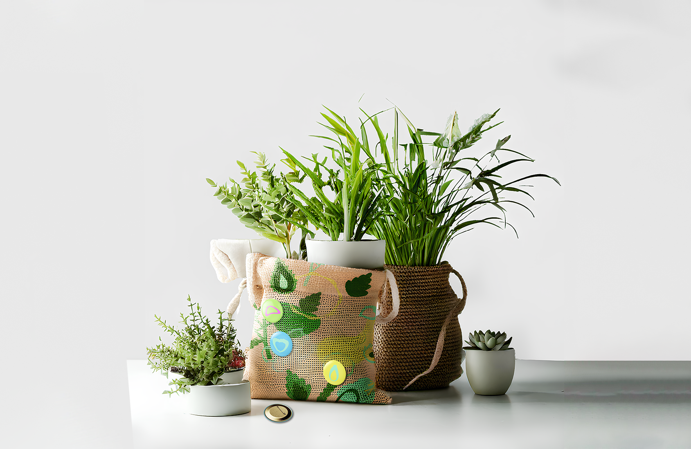
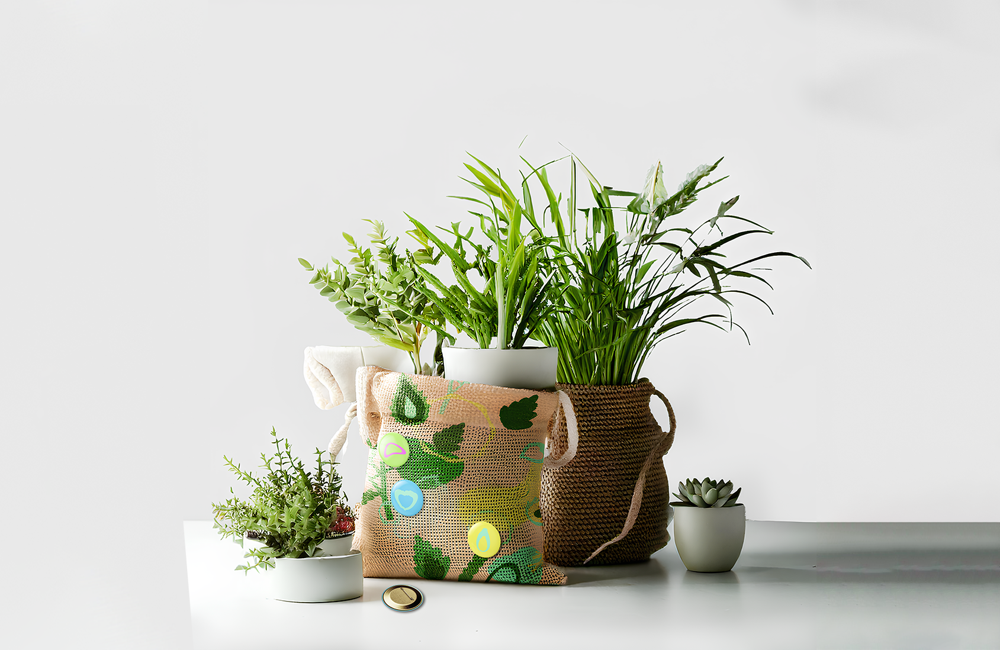

2024
[Seoul Botanic park product redesign]
서울 식물원의 새로운 visual element system을 개발한 프로젝트입니다.
서울식물원의 씨앗 도서관에서 영감을 받아 씨앗을 메인 그래픽 모티브로 삼았습니다.
씨앗은 모든 식물의 시작점으로, 서울식물원의 정체성을 잘 담아낼 수 있는 요소로 선정했습니다.
그래픽은 다양한 씨앗, 식물, 엽록체, 꽃, 그리고 서울식물원 온실의 탑뷰로 구성했으며,
질감을 더해 자연의 느낌을 강조했습니다. 기존 m.i 컬러에서 채도를 높이고
계절마다 2가지 포인트 컬러를 적용해 생동감을 더했습니다.
굿즈는 화분 커버, 함께 사용 가능한 핀뱃지, 스티커, 마스킹 테이프,
차 티백 세트, 씨앗 도서관 대출증 카드, 캘린더,
식물원 스탬프 투어 도장 세트로 구성되었습니다.
하나의 패션 브랜드처럼 전개하고자 했습니다.